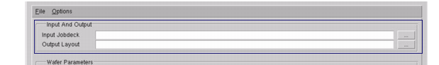
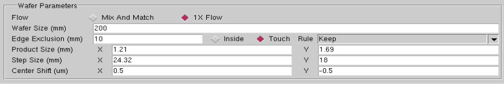
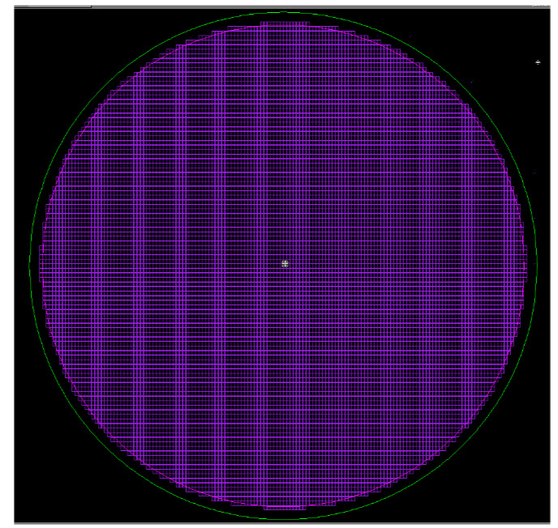
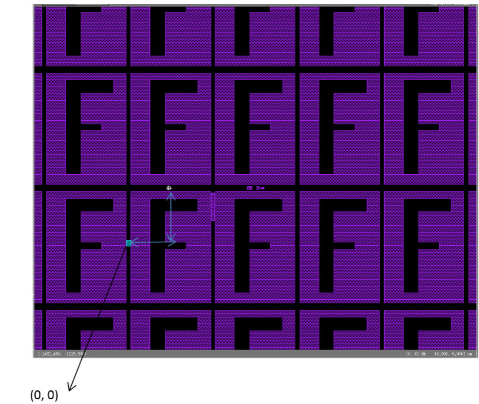
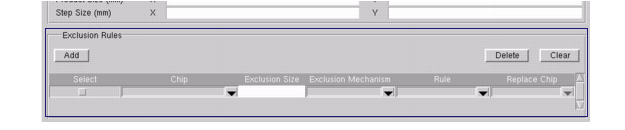
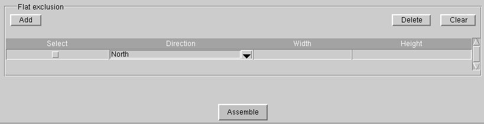
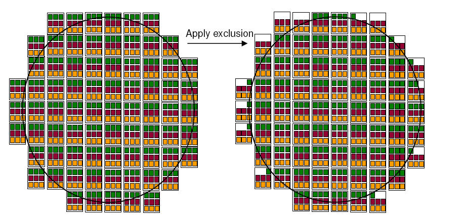
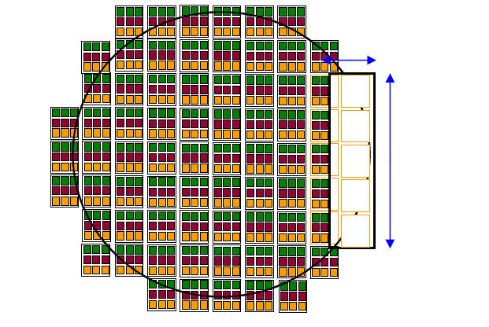

1x Mask Flow
For this flow, there is no predefined wafer map, the tool needs to generate an optimized wafer map to give the maximum number of yielding die on the wafer, based on certain user inputs.

Procedure
- Invoke Calibre WORKbench or Calibre MDPview, and select Tools > Jobdeck Editor. This invokes the Job Deck Editor (see Figure 1).
- At the top of the Job Deck
Editor, enter the input job deck and output layout. The input job
deck should be either a 1x mask MEBES job deck that contains the
product chip layout with KERF structures or an OASIS file.Figure 2. Select Input and Output (1x Mask Flow)
- In the Wafer
Parameters section (see Figure 3), select1
X Flow. This reveals several 1 X Flow-specific optimization
parameters that must be filled in as input. These include:
Wafer size — Enter the wafer size.
Figure 3. Enter Wafer ParametersEdge exclusion size — Enter an exclusion size value as well as an exclusion mechanism (Inside or Touch) and an exclusion rule (Remove or Keep).
Product size — Enter X and Y coordinates for the main product size.
Step Size — Enter X and Y coordinates.
Center Shift — Enter center shift X and Y values from which to start the placement of chips. Center Shift is used to shift the wafer map for the generation of 1X job decks. The 1X job deck places a frame with its center shifted by the specified value from the center of the original 1X mask and generates the new 1X mask considering the exclusion rules provided.
For example following figure shows the JDE run result with the automatic center calculation:
Figure 4. Automatic Center CalculationThe center of the placement is shifted from the center of the wafer circle (0,0) as shown in the following figure:
Figure 5. X- and Y-Shift From Center of Wafer CircleThe Job Deck Editor issues a warning if these values are not numeric values, and are saved and loaded with the normal JDE sessions. If these fields are empty, the tool automatically calculates the center as before.
- In the Exclusion Rules section (see Figure 6), click the Add button
to begin adding exclusion rules. A new input row appears each time
you click the Add button.Figure 6. Add Exclusion Rules
- Select an exclusion rule to
be applied to chips that lay on the excluded zone either to be deleted
or replaced by other chips. You can choose the exclusion mechanism
to be applied on a selected chip, select all placements, and apply
the exclusion size and mechanism as required. In the input row,
enter or select the following information:
Chip
Exclusion Size
Exclusion Mechanism: Select one of the following mechanisms:
Inside: All chips inside of the edge exclusion line are contained
Touch: Chips touching the edge exclusion line are contained
Rule: Select one of the following:
Keep: Keep the existing pattern
Remove: Remove the pattern
Replace: Replace with another pattern
Replace Chip: Specify the chip to replace the excluded chips.
In addition, there is a flat exclusion for flat and notch areas. In this area, you can add multiple flat exclusion rules by clicking the Add button. Enter the direction of the notch/flat areas with the width and length of area to be cleared.
Figure 7. Flat ExclusionFigure 8 and Figure 9 show what happens when exclusion is applied for a touch edge.
Figure 8. Green Chips to be Contained if Touching Edge Exclusion BoundaryFigure 9. Edge Exclusion BoundaryExclusions are saved in exclusion rule files (.exl). See “Exclusion Rule File Format” for complete details on the exclusion rule files.
- You can use Calibre WORKbench or MDPview to make manual adjustments to the chip itself (see “Manual Job Deck Editing” for possible operations).
- Click the Assemble button. The tool generates
an OASIS layout, which is then fractured to a MEBES pattern and
added to the job deck.
You can also save the session by selecting File > Save Session (you can reload the session by selection File > Load Session). The session is saved as a .jde file.